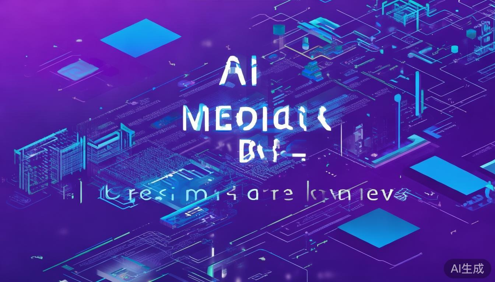

第 9 章 · AI医疗应用：从辅助诊断到新药研发
医疗是AI最有价值的应用场景之一。从影像诊断到药物研发，从健康管理到手术机器人，AI正在拯救生命、降低成本、提高质量。
医学影像诊断
这是AI医疗最成熟的应用：
- 肺结节检测：AI检测CT影像中的肺结节，准确率超过95%，比人类医生更快
- 糖尿病视网膜病变：Google的AI系统通过眼底照片诊断，准确率与眼科专家相当
- 乳腺癌筛查：AI分析乳腺X光片，减少假阳性和假阴性
- 病理切片分析：AI在数字病理图像中识别癌细胞，辅助病理医生
中国已有数十款AI影像产品获得NMPA（国家药监局）三类证，在医院常规使用。
药物研发

传统药物研发：10-15年，10-20亿美元，成功率不到10%。AI正在改变这个游戏：
- 靶点发现：AI分析海量生物医学数据，发现新的药物靶点
- 分子设计：AI生成候选药物分子，大幅缩短筛选时间
- 临床试验优化：AI匹配患者、预测试验结果、优化试验设计
案例：DeepMind的AlphaFold2解决了蛋白质折叠预测难题，2021年预测了2亿+蛋白质结构，覆盖几乎所有已知蛋白质。这为药物研发打开了新的大门。
健康管理
- 智能穿戴：Apple Watch、华为手表监测心率、血氧、ECG，AI预警异常
- 慢病管理：AI根据血糖、血压数据，个性化调整饮食和用药建议
- 心理健康：AI聊天机器人提供初步心理支持，Woebot、Wysa等
手术机器人
- 达芬奇手术机器人：全球装机超过6000台，完成超过1000万例手术
- AI辅助手术规划：术前AI分析影像，规划最优手术路径
- 术中导航：实时影像引导，精确定位病灶
挑战与未来
AI医疗面临的挑战：
- 数据隐私：医疗数据极其敏感，如何在保护和利用之间平衡？
- 监管审批：医疗AI的审批流程长、标准高
- 责任归属：AI误诊谁负责？医生、医院还是AI公司？
- 医患信任：患者是否信任AI的诊断？
未来方向：
- 多模态融合：影像+基因+临床数据，综合判断
- 个性化医疗：基于基因组学的精准治疗
- 远程医疗：AI+5G，优质医疗资源下沉
本章要点
- AI医疗最成熟的应用是影像诊断，最激动人心的是药物研发
- AI不会取代医生，但会用AI的医生会取代不会用的
- 医疗AI的核心价值：提高准确率、降低成本、扩大可及性
出处声明
本文由本站 AI 创作整理，内容基于公开知识/官方资料提炼，信息请以官方发布为准； 涉及的历史事件、产品与数据均可在公开渠道查证，本站不编造来源。引用外部内容遵循其原始许可，标注出处即可。